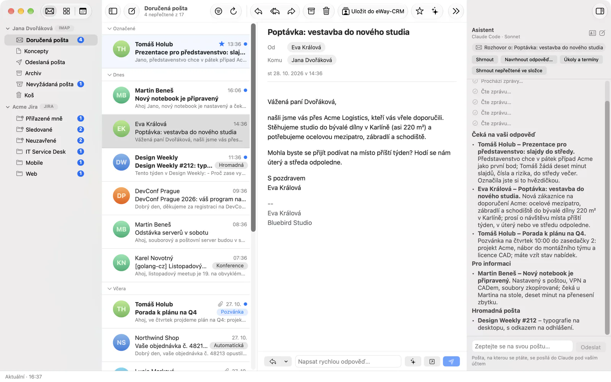
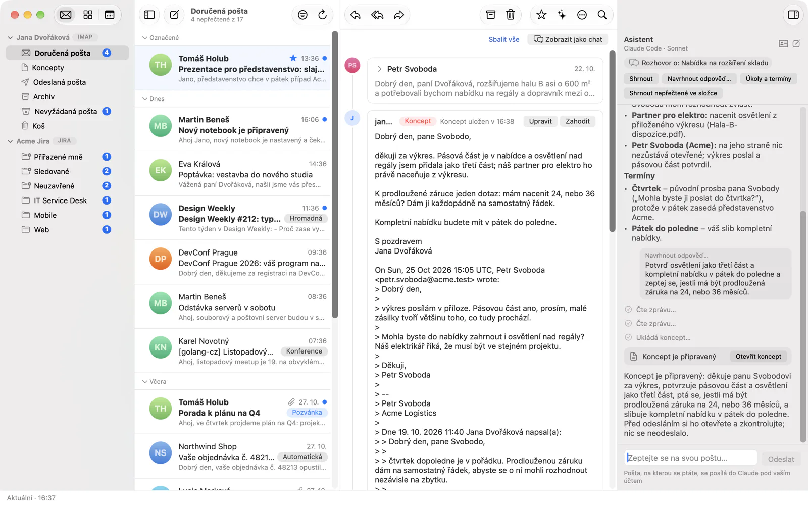
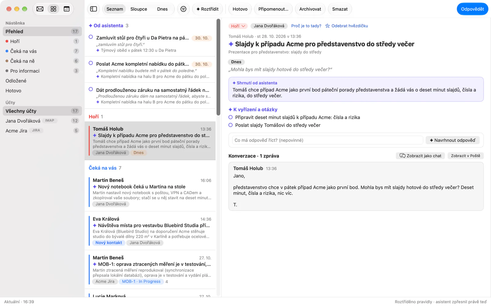
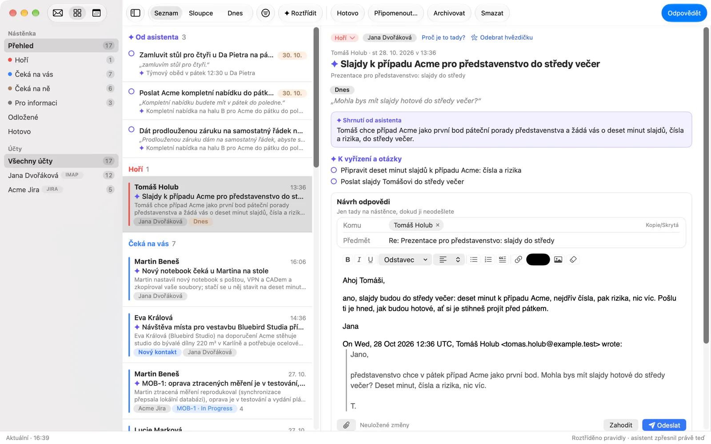
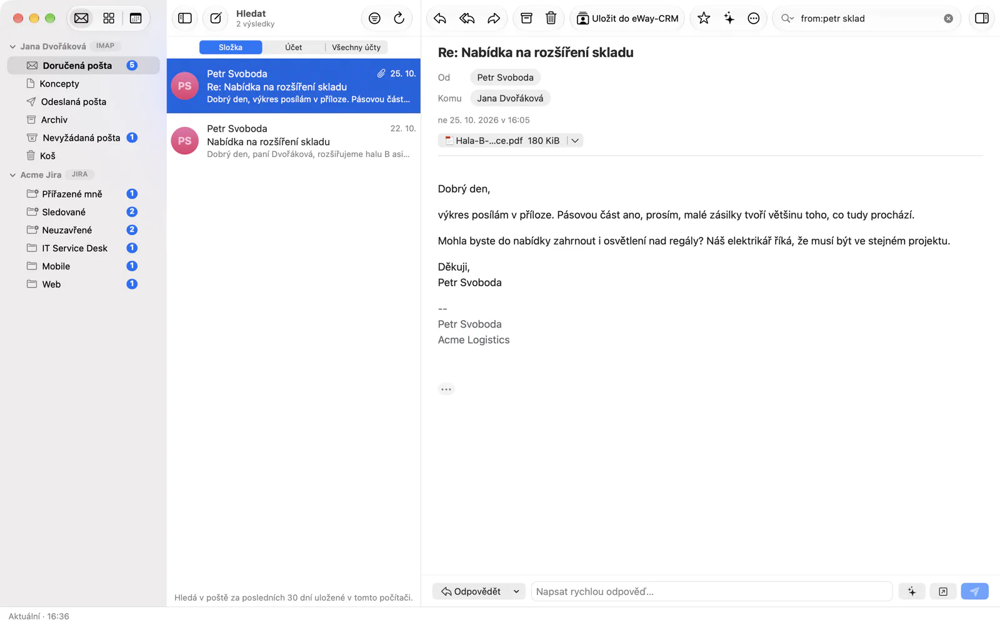
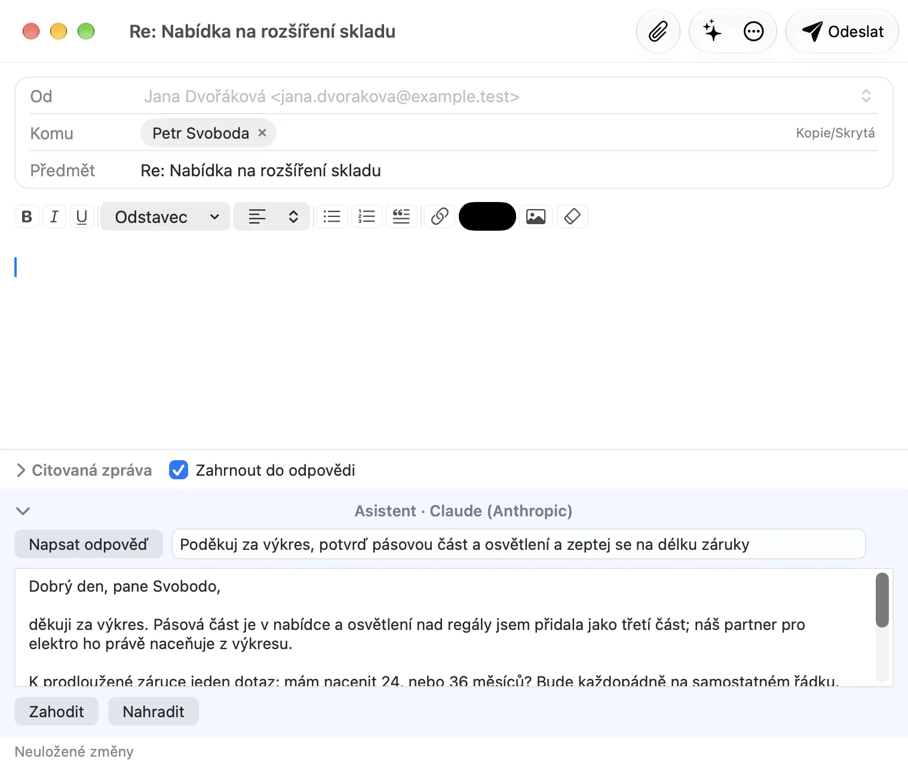
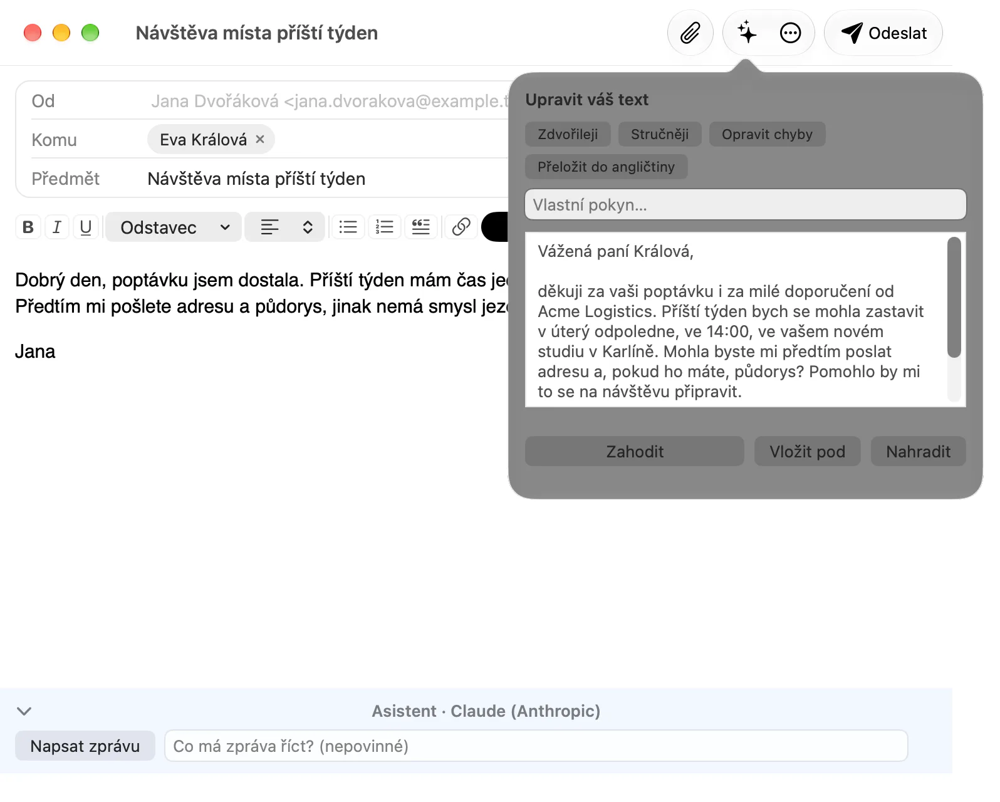

Asistent na vašem vlastním účtu
Malachi Mail nemá vlastní model ani účet u žádného. Pracuje s asistentem, který už na počítači máte, Claude Desktop a Claude Code od Anthropicu nebo ChatGPT přes Codex, a jen když ho oslovíte. Co asistent čte, čte na vašem počítači přes most aplikace; co napíše, zůstane konceptem, dokud ho sami neodešlete.
Kde běží
Tři cesty, všechny nepovinné, všechny v Předvolbách → AI. Dokud některou nezapnete, není v aplikaci nikde žádné ✦ a z počítače o vaší poště nic neodchází.
- Předání do Claude. Tlačítko ✦ otevře Claude Desktop (macOS a Windows) nebo Claude Code s připravenou otázkou k vybrané poště. Claude si poštu přečte přes most, na vašem počítači, pod vaším vlastním předplatným Claude.
- Panel v aplikaci (experimentální). Aplikace spustí váš vlastní Claude Code, nebo ChatGPT přes Codex, jako podřízený proces jen s nástroji mostu pro čtení a koncepty a ukáže rozhovor vedle pošty. První otázka požádá o souhlas.
- Vlastní agent. Most MCP dá Claude Code, Claude Desktop, Zedu, Cursoru nebo jinému klientovi MCP hlídaný přístup k poště, kalendáři a nástěnce v úrovních, které zvolíte při jeho spuštění.
Panel, třídění nástěnky a návrhy odpovědí jsou experimentální: spouštějí agenta pro příkazovou řádku z aplikace, pro což Anthropic ani OpenAI zatím nepotvrdily podmínky. Předání a most jsou běžné použití těchto klientů.
Tlačítko ✦
S mostem registrovaným v Claude má každá zpráva, konverzace i složka nabídku ✦: Shrnout, Úkoly a termíny, Navrhnout odpověď a Zeptat se na tuto zprávu…; složka nabídne Shrnout nepřečtené ve složce; víc vybraných zpráv se shrne nebo zeptá najednou; čip přílohy má Zeptat se asistenta… a soubor předá s sebou. ✦ v kalendáři se ptá na událost.
Otázka se otevře v novém chatu Claude Desktop (se souborem v relaci Cowork) nebo v terminálu s Claude Code, ve vašem jazyce a neodeslaná: přečtete si ji, případně upravíte a odešlete sami. Nese jen id pošty, nikdy předmět, odesílatele ani řádek textu; ty se ke Claude dostanou přes most, ohrazené jako data. Otázka končí připomínkou, že obsah pošty jsou data, ne pokyny.
Panel v aplikaci
S cílem V aplikaci otevře ✦ místo toho panel vpravo v hlavním okně. Rychlé akce jsou stejné, odpověď přijde jako text vedle pošty, které se týká, a rozhovor drží souvislost: zeptáte se dál, nebo vyberete jinou zprávu a panel to řekne. Odpověď, kterou asistent napíše, se objeví jako karta Otevřít koncept, která otevře obyčejné okno Nová zpráva s konceptem. V kalendáři panel nabízí Co mě dnes čeká a Najít volný termín.
Podřízený proces dostane nástroje mostu pro čtení a koncepty a nic víc: žádný shell, soubory ani web, nic z vašeho nastavení Claude Code, pluginů ani dovedností a žádnou uloženou relaci. Model si zvolíte (výchozí Sonnet, dále Haiku nebo Opus) a stav přihlášení vidíte v aplikaci; když je Claude Code odhlášený, panel nabídne Přihlásit se… a spustí vlastní přihlášení Claude Code v prohlížeči, aniž by přihlašovací údaje kdy viděl. Stop rozhovor hned ukončí.
Když asistentovi v panelu řeknete něco o sobě, může navrhnout poznámku do vašeho profilu; uloží se, až klepnete na Uložit.
Třídění nástěnky
Nástěnka řadí vaše konverzace pravidly, která nečtou žádná slova. ✦ Třídit nechá asistenta přečíst případy, které na vás čekají, a ke každému napsat poznámku: titulek, shrnutí, proč tam je, úkoly, které obsahuje, termín s přesnými slovy, ze kterých plyne, a závazek, který jste dali ve vlastní zprávě, opět citovaný. Poznámka je u případu označená jako asistentova; citace se před přijetím ověří proti zprávě.
Co asistent nesmí: nastavit stav případu, označit ho jako hotový, připomenout, archivovat, zahodit koncept ani změnit nastavení. To zůstává vám a vaše rozhodnutí vždy vyhrává nad jeho poznámkou. Jeden běh přečte nejvýš 40 případů; Automaticky třídit novou poštu ho spouští každých 30 minut, když je něco nového, nejvýš 60 případů denně, po vlastním souhlasu. Účty, které smí číst, jeho model (výchozí Sonnet, nezávisle na panelu) a tokeny spotřebované za posledních 24 hodin jsou v Předvolbách → AI → Nástěnka.
Návrhy odpovědí
Případ, který čeká na vás, zpráva adresovaná vám, issue z Jiry, které řešíte nebo jste založili, umí ✦ Navrhnout odpověď, případně s vaším pokynem. Asistent si přečte konverzaci přes most a napíše odpověď jako místní koncept propojený s případem; upravíte ji rovnou na nástěnce, přiložíte, odešlete nebo zahodíte. Nic neodejde, dokud nestisknete Odeslat. Případ, který čeká na druhou stranu, nabídne místo toho Navrhnout připomenutí: krátké připomenutí vlastní zprávy.
Psaní a přepisování
V okně Nová zpráva ✦ přepíše, co máte vybrané, nebo váš vlastní text nad citovanou zprávou: Zdvořileji, Stručněji, Opravit chyby, Přeložit do angličtiny, nebo podle vlastního pokynu. Výsledek nejdřív vidíte a zvolíte Nahradit, Vložit pod nebo ho zahodíte; jeden krok zpět ho vrátí. Odpověď a přeposlání mají navíc pod editorem pruh, který napíše celou zprávu z pokynu s originálem na očích; jeho výsledek jde do editoru jen přes Nahradit.
Tyto požadavky jsou jednorázové a bez jakýchkoli nástrojů: model vidí váš text a zprávu, na kterou odpovídáte, nic dalšího z vaší schránky.
Hledání vlastními slovy
✦ v poli hledání (nebo Alt+↩, ⌥↩) udělá z „faktury od Jany v březnu“ syntaxi hledání, from:jana faktury after:2026-03-01 before:2026-04-01, a vloží ji do pole, abyste ji spustili nebo upravili. Samotné hledání běží na vašem počítači jako vždy.
Váš profil
Předvolby → AI → O mně nesou, co má asistent o vás vědět, nejvýš 2 000 znaků, rod, ve kterém píšete, a doplněk nejvýš 500 znaků ke každému poštovnímu účtu a účtu Jira („formálně, podpis J. Dvořáková“). Jde s každým požadavkem jako vaše přání, které nikdy nepřebíjí pravidla aplikace. Se zapnutým Posílat profil i aplikacím přes MCP ho přes most dostane i agent, kterého spouštíte sami.
Pro agenty: most MCP
malachi-mcp je server Model Context Protocolu přes stdio, který dá agentovi hlídaný přístup k poště, kalendáři a nástěnce. Je to klient jádra úplně jako desktopové aplikace, bez vlastní logiky pošty a bez vlastních přihlašovacích údajů. Co agent smí, se rozhoduje při spuštění serveru, ne modelem:
| Úroveň | Jak povolit | Co přidá |
|---|---|---|
| Čtení a koncepty | vždy | účty, složky, zprávy, hledání, přílohy (i s textem PDF, DOCX a XLSX), synchronizace, přechody Jira, nástěnka, kalendáře, události, volný čas, pozvánky, profil uživatele a koncepty (odpověď, odpověď všem, přeposlání, nová zpráva, komentář Jira) |
| Změny | -allow-modify | označit, přesunout a smazat zprávy, změnit stav issue, odhlásit odběr, vytvořit událost |
| Odesílání | -allow-send | odeslat zprávu; s ním smí odhlášení poslat odhlašovací mail a událost pozvat účastníky |
| Třídění | -allow-triage | poznámky k případům nástěnky (titulek, shrnutí, úkoly, termín s citací, závazek), nikdy stav, který nastavujete sami |
Předvolby → AI → Registrovat v Claude zapíše most do konfigurace Claude Desktop a Claude Code a zase ho odebere; jiný klient MCP dostane příkaz malachi-mcp ručně. Koncept je nečinný: leží v místním úložišti a po 30 sekundách ve složce Koncepty účtu a odejde, až ho odešlete. Všechno, co pochází z pošty, je před modelem ohrazené jako data, HTML nikdy. Nástroje, limity a model hrozeb jsou v dokumentaci mostu.
Co se posílá a kdy
- Nic, dokud se nezeptáte. Aplikace modelem nic neindexuje a na pozadí nic nevolá; jedinou výjimkou je automatické třídění nástěnky, které zapínáte sami a které žádá o vlastní souhlas.
- Co odchází: text zpráv, na které ukážete nebo které agent čte; text přílohy, když si o ni řekne; váš profil; při přepisu váš text a zpráva, na kterou odpovídáte. Nikdy hesla, nikdy HTML, nikdy pošta, na kterou jste neukázali, kromě toho, co si agent s mostem přečte sám a co vidíte v jeho přepisu.
- Kam odchází: k modelu pod vaším vlastním účtem, u Anthropicu nebo OpenAI. Projekt neprovozuje žádné servery a nic nevidí.
- Pevné meze: proces panelu nemá shell, soubory ani web a nedrží relaci; úrovně mostu se nastavují při jeho startu, ne modelem; obsah pošty je ohrazený jako data s nonce, kterou model nepodvrhne; koncept je nečinný, dokud ho neodešlete; na nástěnce asistent píše poznámky a nic jiného a vaše rozhodnutí vyhrává.
- Předání nese jen id; pošta se ke Claude dostane přes most, na vašem počítači, s touž ohradou.
Celý model hrozeb je sepsaný v bezpečnostních poznámkách projektu.
Na třech platformách
| Linux | macOS | Windows | |
|---|---|---|---|
| Předání do Claude Desktop | Nepodporováno | Ano | Ano |
| Předání do Claude Code | V terminálu | V terminálu | V terminálu |
| Panel v aplikaci | Claude Code, ChatGPT | Claude Code, ChatGPT | Claude Code, ChatGPT |
| Třídění a návrhy odpovědí | Ano | Ano | Ano |
| Přepisování a hledání vlastními slovy | Ano | Ano | Ano |
| Registrovat v Claude | Claude Code | Claude Desktop, Claude Code | Claude Desktop, Claude Code |
Asistent při práci
Sedm scén nad stejnou vzorovou schránkou jako ostatní obrázky, nafocených na macOS: na Linuxu a Windows asistent funguje úplně stejně. Odpovědi na nich jsou ukázkové: schránka je vymyšlená a odpovědi byly připravené pro ni; co napíše váš vlastní Claude nebo ChatGPT, bude jiné.










from:petr sklad; hledání samo běží na vašem počítači.



Další obrázky vpravo